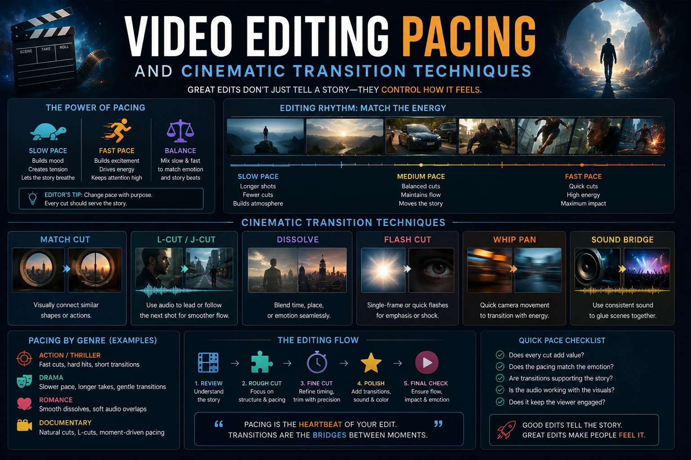
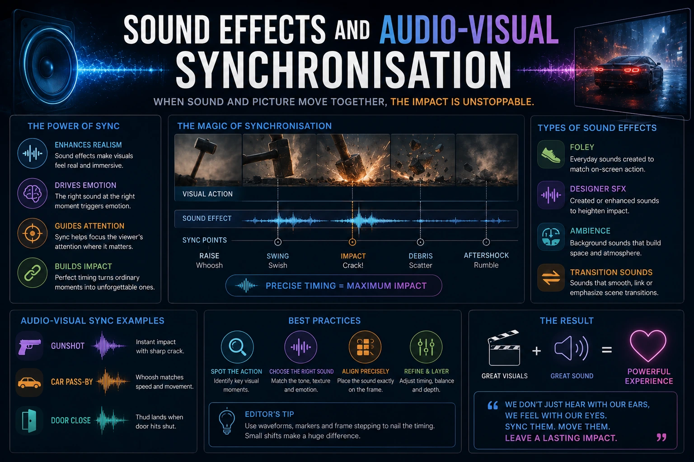

How Micro-Transitions and Sound Design Keep Audiences Watching
The Invisible Layer That Separates High-Retention Video from Everything Else
Two video ads are produced for the same brand with the same footage, the same script, the same on-screen presenter, and the same call to action. One achieves a 68% completion rate; the other achieves a 31% completion rate. The footage is identical. The difference is invisible to most viewers — but it is felt by every one of them.
The difference is the editing layer that operates below conscious perception: the micro-transitions at every cut point, the sound design that reinforces every visual event, the audio-visual synchronisation that creates the rhythm the viewer's attention system follows through the full duration of the video. This is the craft layer of creative media production that most video production briefs never specify — and that most video editors apply instinctively rather than systematically.
This guide covers the specific techniques that professional video editing pacing frameworks use to keep social media audiences watching — the visual attention retention hacks, the cinematic transition techniques, the jump-cut psychology, and the sound effects for short video ads that together produce the content retention strategies that convert views into completions and completions into conversions.
The Neuroscience of Video Retention: What the Brain Is Actually Responding To
Understanding content retention strategies requires understanding the specific neural mechanisms that determine when a viewer's attention stays engaged and when it drifts toward the scroll. Video retention is not a single cognitive event — it is a continuous process of attention allocation and reallocation that plays out across every second of the video's runtime.
The brain's attention system operates on two competing drives simultaneously:
- The novelty drive. The brain is wired to prioritise new information over familiar information — a neurological legacy of survival-oriented alertness. In video viewing, this means the brain allocates higher attention resources to new visual and auditory stimuli and progressively reduces attention allocation to stimuli that have become predictable. A video that presents a consistent, unchanging visual and audio environment for more than two to three seconds begins to feel familiar — and the novelty drive starts redirecting attention to more novel stimuli in the environment (the scroll, the notification, the environmental sound).
- The narrative drive. The brain is also wired for narrative — for the resolution of open loops and incomplete patterns. A video that creates an unresolved tension at regular intervals — a question without yet an answer, a visual that suggests something more is coming, an audio element that creates anticipation — activates the narrative drive to hold attention until the open loop is resolved. The combination of novelty drive management (preventing habituation through visual and audio variety) and narrative drive activation (creating and resolving open loops) is the foundation of all effective video editing pacing frameworks.
Micro-transitions and sound design address both drives simultaneously: micro-transitions provide the visual novelty stimulus that resets the novelty drive at each cut point; sound design creates the audio anticipation and resolution pattern that activates and satisfies the narrative drive. Together, they produce a video experience that keeps the viewer engaged without them consciously understanding why they are still watching.
Novelty Drive Management
Visual variety at regular intervals — achieved through micro-transitions, shot changes, text overlay entrances, and colour shifts — prevents the habituation that causes attention drift. The goal is to present a new visual stimulus to the brain every two to three seconds without creating visual chaos.
Narrative Drive Activation
Audio-visual synchronisation creates an implicit promise — the expectation that the pattern will continue and resolve. When the editing rhythm is consistent, the brain begins to anticipate the next beat, the next cut, the next visual event — which is, neurologically, the experience of engagement.
Attention Reset at Critical Points
Jump-cut psychology uses the abrupt visual discontinuity of the jump-cut to trigger an alerting response — a momentary spike in attention — at the specific points in the video where attention is most likely to drift: the middle section, the product claim, the pre-CTA moment.
Subliminal Satisfaction
Micro-transitions and well-executed sound design produce a generalised sense of quality and polish that the viewer cannot articulate but strongly feels. A video with excellent micro-transitions feels better — more professional, more credible, more worth continuing to watch — than one without, even when the viewer has no conscious awareness of what is producing this feeling.

Micro-Transition Techniques: The Edit Point Layer
Cinematic transition techniques at the micro level operate in the one to three frames immediately before and after each cut point — a duration so brief (less than 0.1 seconds at 30fps) that it registers as a feeling rather than a visible event. The specific micro-transition techniques used in professional creative media production:
- The flash frame. A single white or black frame inserted at the cut point — lasting one frame at 30fps, or two frames for a slightly more pronounced effect. The flash frame registers as a visual pulse rather than a visible flash — it is perceived as energy at the cut point rather than as a white or black frame. The white flash communicates excitement and energy; the black flash communicates weight and impact. The flash frame is the simplest and most universally applicable micro-transition available, and it is invisible in the finished video to all but the most attentive editor reviewing frame by frame.
- The push-zoom micro-transition. In the final one to three frames of the outgoing shot, a subtle scale increase — a zoom in of one to two percent — creates a slight forward push at the cut point that communicates momentum and direction. The viewer's brain reads this as a push toward the incoming shot — reducing the abruptness of the cut and adding directional energy to the edit rhythm. Applied to every cut in a fast-paced sequence, the push-zoom micro-transition creates a sense of continuous forward movement that is one of the most reliable visual attention retention hacks available in the editor's toolkit.
- The colour shift micro-transition. A brief shift in the colour grade — a slight warm push, a brief desaturation, a subtle hue rotation — applied across the final two to three frames of the outgoing shot creates a tonal micro-event at the cut point that signals "something is changing" to the viewer's visual system. This technique is particularly effective for scene changes — transitions between distinctly different locations or lighting environments — where it smooths the tonal discontinuity between the two shots and creates a sense of deliberate visual design rather than abrupt cutting.
- The motion-matched cut. A cut timed to coincide with a specific motion element in the outgoing shot — the peak of a movement, the moment of stillness after an action, the exact frame where a hand gesture reaches its furthest point — produces a visceral sense of visual satisfaction at the cut point. The motion-matched cut is the technique most associated with "beautifully edited" video by non-editors who cannot articulate why a cut feels satisfying — the satisfaction comes from the cut landing precisely where the visual motion creates the optimal transition point.
Jump-Cut Psychology: Engineering Attention Spikes
Jump-cut psychology in short video ads is the deliberate application of the alerting response — the brief attention spike triggered by visual discontinuity — to maintain engagement at the specific points in the video where the audience's attention is most at risk of drifting.
The strategic deployment of jump-cuts in short video ads:
- Jump-cuts at the end of every major sentence in a talking-head sequence. In a talking-head format — a presenter speaking to camera — the viewer's attention system habituates to the static visual of a person in the same position after approximately two to three seconds. A jump-cut at the end of each sentence — a slight repositioning of the presenter between cuts, a zoom level change, or a switch between two camera angles — resets this habituation at the most natural narrative boundary: the sentence break. The viewer perceives this as energetic, dynamic editing; they do not perceive the attention manipulation behind it.
- Jump-cut frequency increases toward the CTA. The pacing of jump-cuts in a video should not be constant — it should accelerate toward the call to action. A video that begins with cuts every three seconds and ends with cuts every one second creates a natural pacing acceleration that communicates urgency and momentum — the same rhythm that music producers use to build toward a musical climax. The viewer's attention system registers this acceleration as a signal that something important is approaching, which increases engagement precisely when conversion attention is needed most.
- The pattern-break jump-cut. At the mid-point of a video where attention drift is statistically highest, a sudden change in the jump-cut pattern — a longer pause, a close-up that was not part of the preceding sequence, a different visual register — creates a pattern break that resets the viewer's engagement with a stronger alerting response than a regular jump-cut provides. The pattern-break is the video equivalent of a plot twist — it resets the viewer's expectations and re-activates their narrative drive at the point where it has most weakened.
Audio-Visual Synchronisation Secrets: The Layer Most Brands Miss
Audio-visual synchronisation is the most consistently undertreated aspect of short video production for social media — and it is the aspect that most clearly distinguishes professional creative media production from competent amateur content. When the audio and visual channels of a video are synchronised — when cuts fall on beats, text overlays appear on audio accents, and motion elements align with rhythmic patterns — the viewer experiences the video as coherent and satisfying without being able to articulate why.
The specific audio-visual synchronisation techniques that produce the highest retention impact:
- Beat-synchronised cuts. Every major cut in the video should fall on a beat of the music track — specifically the downbeat or a strong accent beat rather than a weak beat or an off-beat. Editing software with beat detection (DaVinci Resolve's auto-beat detection, Premiere Pro's audio beat detection tool) can automatically identify the beat positions in the audio track and create markers for the editor to cut to. The investment in beat synchronisation is the single most impactful audio-visual synchronisation technique available and the one that requires the least technical complexity to implement.
- Text overlay entrances on audio accents. Text overlays that appear in synchrony with a drum hit, a musical phrase onset, or a spoken word peak create a visual-audio confirmation event that the brain processes as intentional and satisfying. Text overlays that appear between audio events — on the silence between beats — create a mild audio-visual desynchrony that registers as slightly off. The specific timing of text overlay entrances is one of the most overlooked elements of sound effects for short video ads and one of the most reliably attention-holding when executed correctly.
- Motion elements triggered by audio events. A product reveal animation, a lower-third slide-in, or a colour grade shift triggered precisely by a specific audio event — a bass hit, a musical phrase peak, a spoken emphasis — creates a multi-sensory confirmation event that increases the viewer's sense of engagement with the content. This technique is most commonly used in brand animation and motion graphics — it is significantly underused in talking-head and documentary-style video content where the opportunities for motion-audio synchronisation are equally available.

Sound Effects for Short Video Ads: The Subliminal Layer
Sound effects for short video ads serve a specific function different from the ambient sound and music that form the video's primary audio layer — they are the subliminal audio signals that communicate visual events, reinforce edit points, and create micro-moments of audio satisfaction that keep the viewer's auditory attention engaged alongside their visual attention.
The specific sound effect categories and their application:
Transition Sound Effects
- Whoosh/swoosh: communicates directional movement at scene transitions and text entrances — 50 to 150ms duration, positioned to peak at the cut frame
- Tick/click: a brief, sharp percussive sound at cut points in fast-paced sequences — most effective when the cut rhythm creates a consistent tick-tick-tick pattern
- Bass drop or sub-bass thud: at major structural transitions — from one section of the video to another — communicates weight and significance
Text and Graphic Sound Effects
- Typing or keyboard tap sounds: for text overlay entrances in informational or factual contexts — communicate precision and intelligence
- Pop or boing: for bullet point appearances in energetic or humorous contexts — communicate lightness and accessibility
- Chime or sparkle: for positive data reveals or achievement moments — communicate celebration and reward
CTA and Conversion Sound Effects
- Positive ascending tone or chime: immediately before or on the CTA appearance — communicates opportunity and invitation
- Subtle notification ping: on the CTA button or link appearance — leverages the learned association with notification alerts to create an action impulse
- Bass swell into the CTA: building audio energy beneath the final seconds of the video that releases into the CTA moment — communicates climax and resolution
Video Editing Pacing Frameworks: The Structural Layer
Video editing pacing frameworks for keeping users engaged on social media operate at the structural level — determining the rhythm of cuts, the frequency of visual variety events, and the placement of re-engagement devices across the full duration of the video. The three structural frameworks most commonly applied to short social video content:
- The escalating frequency framework. The video is divided into three sections of roughly equal duration. In the first section, cuts occur every two to three seconds — a moderate pace that communicates quality without overwhelming. In the second section, cuts occur every one to two seconds — a noticeably faster pace that communicates increasing energy and information density. In the third section (the final approach to the CTA), cuts occur every 0.5 to one second — a rapid pace that communicates urgency and climax. This framework is the most universally applicable to short social video ads because it produces a natural build that the viewer experiences as engagement without recognising as manipulation.
- The question-answer loop framework. The video is structured as a series of open loops and close loops — each section opens with a visual or spoken question (an open loop) and closes with a visual or spoken answer (a close loop). The close loop for each section simultaneously opens the next loop, creating a chain of narrative tension and resolution that activates the brain's narrative drive throughout the video. The pacing of cuts within each loop section is faster during the open loop (communicating tension) and slightly slower during the close loop (communicating resolution) — creating a breathing, rhythmic pace structure that feels engaging rather than relentlessly pressurised.
- The contrast rhythm framework. The video alternates between high-energy cut sequences (three to five rapid cuts in close succession) and single sustained shots (one to two seconds of uninterrupted visual) — creating a rhythm of intensity and release that prevents habituation through consistent variety. The contrast between the rapid sequence and the sustained shot is the novelty event that resets the viewer's attention — because the sudden slowness after rapid cutting is as novel as the sudden rapidity after stillness.
Keeping Users Engaged on Social Media: The Platform-Specific Application
The micro-transition and sound design techniques described above apply across all video formats — but their specific implementation should be calibrated for the platform where the video will be distributed, because the consumption environment differs significantly between platforms and requires different emphases:
- Instagram Reels. The highest audio-on consumption rate of any short video platform in India — sound design investment is fully justified. The escalating frequency framework at 0.5 to 2 second cuts produces the fastest-feeling content that the Reels audience has been conditioned to engage with. Beat-synchronised cuts are non-optional — the Reels audience is the most rhythmically aware of any platform audience. Micro-transitions should be subtle — the Reels aesthetic rewards clean, precise editing over visible transition effects.
- YouTube Shorts. Slightly longer average attention window than Reels — the escalating frequency framework can begin at a more moderate pace. Sound design is important but secondary to the strength of the verbal content in the first five seconds. The question-answer loop framework performs well on Shorts because the YouTube audience has a higher tolerance for structured information delivery than the Instagram audience.
- LinkedIn native video. The most audio-off consumption environment of any platform — sound design functions primarily as a secondary layer for engaged viewers rather than as the primary retention mechanism. The contrast rhythm framework at two to four second cuts produces the most appropriate pace for the professional LinkedIn context. Micro-transitions should be refined rather than energetic — the LinkedIn audience responds to visual quality signals rather than kinetic energy signals.
- WhatsApp Status. The shortest attention window and the most casual consumption context — micro-transitions and sound design must work at their most compressed. A 15 to 30 second video with cuts every one to 1.5 seconds, a single clearly timed whoosh transition at the midpoint, and a simple audio stinger at the CTA is the appropriate approach for the WhatsApp Status consumption environment.
Conclusion
The video editing pacing frameworks, micro-transition techniques, jump-cut psychology, audio-visual synchronisation, and sound effects for short video ads covered in this guide are the invisible infrastructure of high-retention video content. They are not visible to the audience — but they are felt by every viewer who completes a video that uses them versus abandons one that does not.
The brands producing the highest completion rates on their social video content in 2026 are not those with the largest production budgets or the most sophisticated equipment. They are the brands whose editors understand the neurological drivers of attention and apply the systematic techniques that manage them — the visual attention retention hacks that operate below consciousness and the content retention strategies that produce the platform-specific engagement signals that determine organic distribution.
At The PhD Ads, we produce creative media production for Indian brands with the retention editing layer built in — micro-transitions, beat-synchronised cuts, platform-specific video editing pacing frameworks, and professional sound design applied from the first frame to the final call to action.
Key Topics
Ready to Build Video Content That Keeps Audiences Watching?
At The PhD Ads, we produce creative media content for Indian brands with professional video editing pacing frameworks, micro-transitions, sound design, and audio-visual synchronisation built in — the invisible retention layer that converts views into completions and completions into commercial results.
Email: team@e2o.in